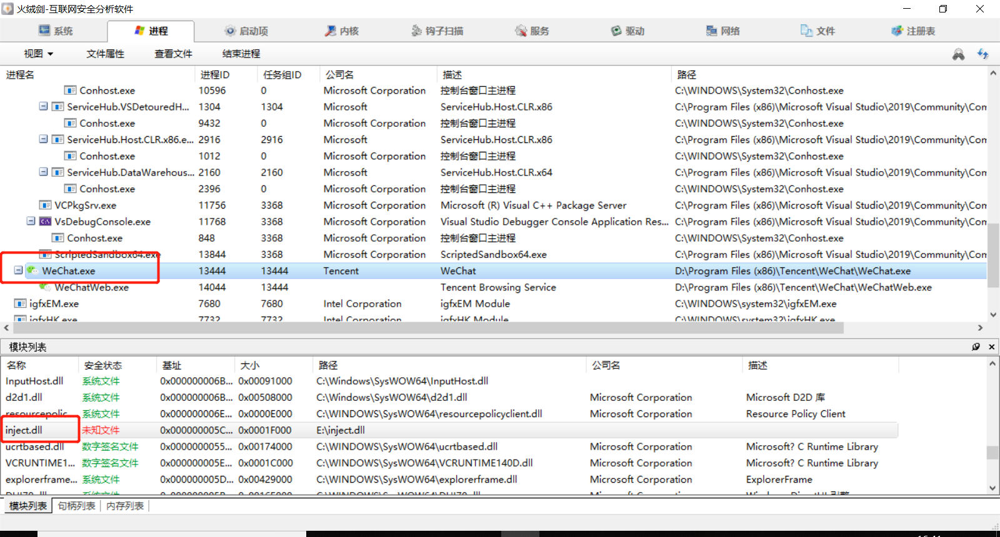
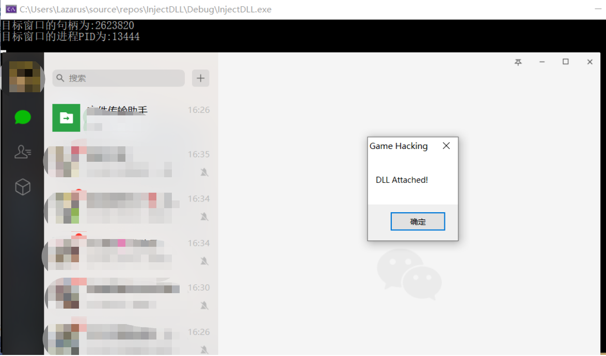

一、远程线程注入的原理
1、其基础是在 Windows 系统中，每个 .exe 文件在双击打开时都会加载 kernel32.dll 这个系统模块，该模块中有一个 LoadLibrary() 函数，可以将DLL文件加载到自身进程中。
2、这样，就可以用 CreateRemoteThread() 函数创建一个远程线程，让目标进程调用LoadLibrary() 来加载我们自己写的DLL 。CreateRemoteThread() 有这几个参数比较关键：A:想要注入的进程的句柄，这里可以通过OpenProcess()得到； B:想要运行的函数，本例中当然是 LoadLibrary() 啦； C: 所运行函数的参数，本例中是自己写的DLL的存放路径。
3、那么，怎么让 LoadLibrary() 找到自己写的DLL的存放路径呢？这就需要在内存中开辟一块空间，把路径写入进去。这要先用 VirtualAllocEx(）开辟一块空间，然后用WriteProcessMemory() 函数把DLL路径写进去。
4、小结：总的来说，就是：先在目标进程的内存空间里开辟一块新地方，往新地方里面写入DLL的路径，再创建远程线程找到LoadLibrary() 函数，并在刚才开辟的新地方中读取DLL路径，进而加载我们自己写的DLL。
二、代码实现（含详细注释）
1 #include <iostream>
2 #include "stdlib.h"
3 #include <tchar.h>
4 #include <Windows.h>
5
6 bool Inject(DWORD dwId, WCHAR* szPath)//参数1：目标进程PID 参数2：DLL路径
7 {
8 //一、在目标进程中申请一个空间
9
10
11 /*
12 【1.1 获取目标进程句柄】
13 参数1：想要拥有的进程权限（本例为所有能获得的权限）
14 参数2：表示所得到的进程句柄是否可以被继承
15 参数3：被打开进程的PID
16 返回值:指定进程的句柄
17 */
18 HANDLE hProcess = OpenProcess(PROCESS_ALL_ACCESS, FALSE, dwId);
19
20
21 /*
22 【1.2 在目标进程的内存里开辟空间】
23 参数1：目标进程句柄
24 参数2：保留页面的内存地址，一般用NULL自动分配
25 参数3：欲分配的内存大小，字节单位
26 参数4：MEM_COMMIT：为特定的页面区域分配内存中或磁盘的页面文件中的物理存储
27 参数5：PAGE_READWRITE 区域可被应用程序读写
28 返回值：执行成功就返回分配内存的首地址，不成功就是NULL
29 */
30 LPVOID pRemoteAddress = VirtualAllocEx(
31 hProcess,
32 NULL,
33 1,
34 MEM_COMMIT,
35 PAGE_READWRITE
36 );
37
38 //二、 把dll的路径写入到目标进程的内存空间中
39
40 DWORD dwWriteSize = 0;
41 /*
42 【写一段数据到刚才给指定进程所开辟的内存空间里】
43 参数1：OpenProcess返回的进程句柄
44 参数2：准备写入的内存首地址
45 参数3：指向要写的数据的指针（准备写入的东西）
46 参数4：要写入的字节数（东西的长度+0/）
47 参数5： 返回值。返回实际写入的字节
48 */
49 WriteProcessMemory(hProcess,pRemoteAddress, szPath, wcslen(szPath) * 2 + 2, &dwWriteSize);
50
51
52 //三、 创建一个远程线程，让目标进程调用LoadLibrary
53
54 /*
55 参数1：该远程线程所属进程的进程句柄
56 参数2：一个指向 SECURITY_ATTRIBUTES 结构的指针, 该结构指定了线程的安全属性
57 参数3：线程栈初始大小,以字节为单位,如果该值设为0,那么使用系统默认大小
58 参数4：在远程进程的地址空间中,该线程的线程函数的起始地址（也就是这个线程具体要干的活儿）
59 参数5：传给线程函数的参数（刚才在内存里开辟的空间里面写入的东西）
60 参数6：控制线程创建的标志。0（NULL）表示该线程在创建后立即运行
61 参数7：指向接收线程标识符的变量的指针。如果此参数为NULL，则不返回线程标识符
62 返回值：如果函数成功，则返回值是新线程的句柄。如果函数失败，则返回值为NULL
63 */
64 HANDLE hThread = CreateRemoteThread(
65 hProcess,
66 NULL,
67 0,
68 (LPTHREAD_START_ROUTINE)LoadLibrary,
69 pRemoteAddress,
70 NULL,
71 NULL
72 );
73 WaitForSingleObject(hThread, -1); //当句柄所指的线程有信号的时候，才会返回
74
75 /*
76 四、 【释放申请的虚拟内存空间】
77 参数1：目标进程的句柄。该句柄必须拥有 PROCESS_VM_OPERATION 权限
78 参数2：指向要释放的虚拟内存空间首地址的指针
79 参数3：虚拟内存空间的字节数
80 参数4：MEM_DECOMMIT仅标示内存空间不可用，内存页还将存在。
81 MEM_RELEASE这种方式很彻底，完全回收。
82 */
83 VirtualFreeEx(hProcess, pRemoteAddress, 1, MEM_DECOMMIT);
84 return 0;
85 }
86
87
88 int _tmain(int argc, _TCHAR * argv[])
89 {
90 wchar_t wStr[] = L"E:\\inject.dll";
91 DWORD dwId = 0;
92
93 //参数1：(NULL
94 //参数2：目标窗口的标题
95 //返回值：目标窗口的句柄
96 HWND hCalc = FindWindow(NULL, L"微信");
97 printf("目标窗口的句柄为:%d\n", hCalc);
98
99 DWORD dwPid = 0;
100
101 //参数1：目标进程的窗口句柄
102 //参数2：把目标进程的PID存放进去
103 DWORD dwRub = GetWindowThreadProcessId(hCalc, &dwPid);
104 printf("目标窗口的进程PID为:%d\n", dwPid);
105
106 //参数1：目标进程的PID
107 //参数2：想要注入DLL的路径
108 Inject(dwPid, wStr);
109
110 return 0;
111 }
执行之后，DLL就注入到了PC版的微信进程。且该DLL中含有一个弹窗代码，也出现在了PC版微信的界面之上。


附：测试用的DLL代码
1 #include <windows.h>
2
3
4 DWORD WINAPI runBot(LPVOID lpParam) {
5 // 此处可以写具体的bot代码
6 return 1;
7 }
8
9
10 BOOL APIENTRY DllMain( HMODULE hModule,
11 DWORD ul_reason_for_call,
12 LPVOID lpReserved
13 )
14 {
15 switch (ul_reason_for_call)
16 {
17 case DLL_PROCESS_ATTACH:
18 MessageBoxA(NULL, "DLL Attached!\n", "Game Hacking", MB_OK | MB_TOPMOST);
19 CreateThread(NULL, 0, &runBot, NULL, 0, NULL);
20 break;
21 }
22 return TRUE;
23 }（以上例程均在 Windows 10 系统，VisualStudio 2019 环境中编译通过）